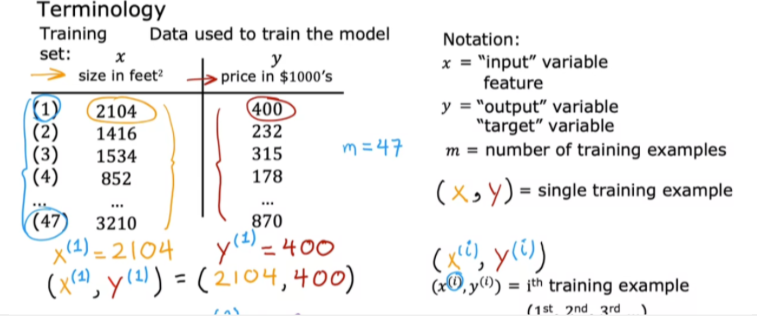
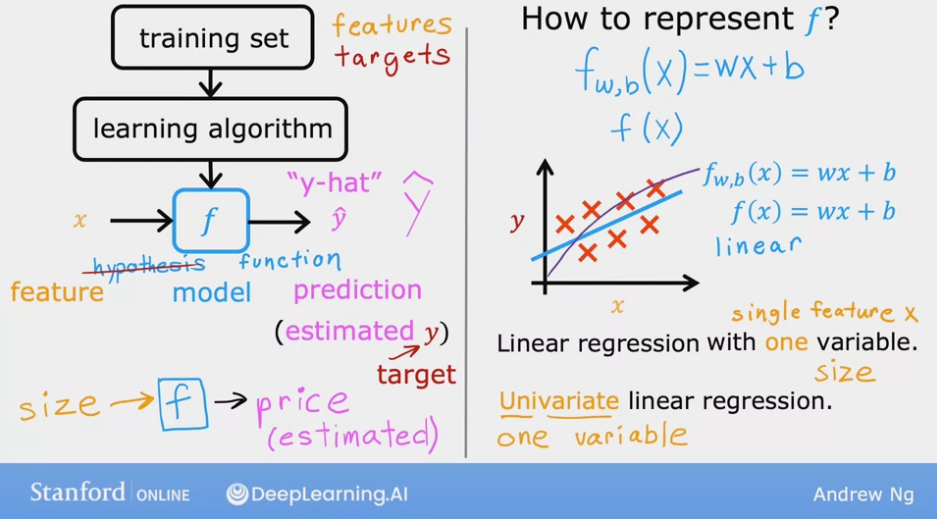

Notations, Cost Function, Gradient Descent¶
To explain the concepts in this chapter, we first introduce linear regression.
Linear Regression¶
Linear Regression is a supervised machine learning algorithm where the predicted output is continuous. There are types of linear regression: univariate regression and multivariate regression.
The image below, taken from Andrew Ng’s ML lectures, shows the notations we are going to use:
Univariate regression¶
Linear regression with one variable (i.e. single feature \(x\)). The image below describes the basic concepts in (univariate) linear regression. In this chapter, we only discuss univariate regression to introduce other machine learning concepts in a simplified manner.
Cost function¶
Cost function measures the error of the model given the parameters of the model (in this case, the parameters are \(w\) and \(b\)).
The image below shows the squared error cost function.
It is taking the errors of all predictions (\(m\) predictions for \(m\) training samples)
Then squaring each of them individually – to keep the values positive, summing all the errors
Then dividing be the number of training samples \(m\) to compute the average.
By convention and mathematical convenience, the sum of the errors are actually divided by \(2m\) instead of only \(m\)

Minimizing the cost function¶
The overall goal when we are building an ML model is to minimize the cost function, and hence improve the quality of the predictions by the model.

So the overall problem is to find \(w\) for which \(J(w)\) will be close to the minimum value.
For the training data shown in the image below (i.e. the values of math:X and math:y), we plot some values of \(J(w)\) for some \(w\) values.
As the image shows, when \(w=1\), the value of \(J(w)\) is minimum.

Now, if we also consider \(b\), the plot for \(J\) becomes a 3D plot.
A 3D plot is difficult to interpret.
The more interpretable plot with 3 axes is a contour plot. See the image below for an example.
Each ovals (or eclipses) in a contour plot has the same \(J\) value.

How to choose the value of \(w\) so that J(w, b) is close to the minimum value?